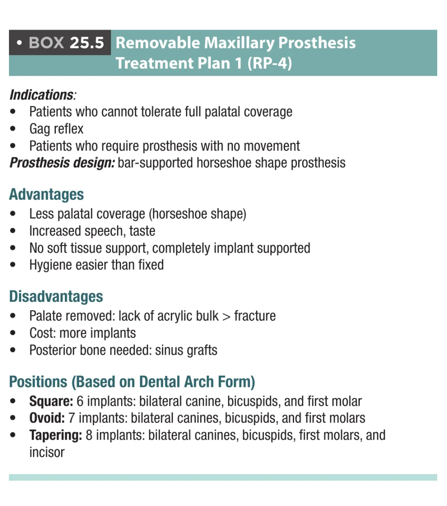
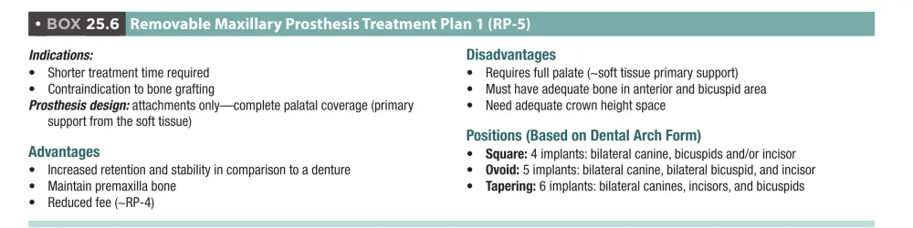

نسخه استخراجشده؛ ترجمه یا تأیید علمی انجام نشده است. وضعیت: captured
نخستین چیزی که باید دربارهی ماگزیلا بدانی، شمار گزینههاست.
در مندیبل چهار گزینهی اوردنچر داشتیم. در ماگزیلا حکم صریح است: «تنها دو گزینهی درمانی اوردنچر ماگزیلا در دسترس است.»
و جملهای که کل این درس را توجیه میکند: «بهعبارت دیگر، اوردنچرهای ایمپلنتی ماگزیلا کاملاً با همتای مندیبولارشان متفاوتاند.»
گزینهی ۱ — اوردنچر ایمپلنتی RP-4 ماگزیلا.
این پروتز با شش تا هشت ایمپلنت ساخته میشود و حین عملکرد رِیجید (سخت) است — یعنی ساپورت اصلی با ایمپلنتهاست و هیچ ساپورت بافت نرمی وجود ندارد.
و چرا این طراحی ترجیح داده میشود؟ «چون حجم استخوانی بیشتری را حفظ میکند و گیر و اعتمادبهنفس بهبودیافتهای در مقایسه با یک دنچر یا پروتز RP-5 به بیمار میدهد.»
و یک رابطهی علّی که باید دنبال کنی: چون کام از این پروتز برداشته میشود (یعنی شکل نعلاسبی)، ساپورت بافت نرم از دست میرود — و همین شمار بیشتری ایمپلنت را ضروری میکند. در نتیجه «هزینهی درمان مشابه یک پروتز ثابت است، بهدلیل شمار افزودهی ایمپلنتهای لازم.»
و اکنون سنگینترین هشدار اوردنچر ماگزیلا:
«متأسفانه بسیاری از پزشکان باور دارند که اوردنچر RP-4 به ایمپلنتهای کمتر و توجه کمتری به بیومکانیک بار اکلوزالی نیاز دارد، صرفاً به این دلیل که پروتز برداشتنی است. این یکی از دلایل اصلی نرخ بالای شکست ایمپلنت در اوردنچرهای ایمپلنتی ماگزیلاست.»
و سه عامل اغلب انتخاب اوردنچر ماگزیلا را رقم میزنند: هزینهی کمتر، ترس بیمار از گرافت استخوان، نبود آموزش پیشرفتهی پزشک.
هر سه عامل، بیرون از بیولوژی بیمارند. کم پیش میآید که ریشهی یک نرخ شکست بالینی در اقتصاد و آموزش باشد — و همین آن را به یاد ماندنی میکند.
پس قاعدهی طرح درمان چیست؟ «طرح درمان برای اوردنچرهای RP-4 ماگزیلا مشابه یک پروتز ثابت است، چون این اوردنچر حین عملکرد ثابت است.» — همان اصل چهارمی که در یونیت پیش دیدی.
و موقعیتهای کلیدی ایمپلنت برای RP-4 ماگزیلا:
و طرح اکلوزال: «طرح اکلوزال برای پروتز RP-4 مشابه یک پروتز ثابت است: اکلوژن متقابلاً محافظتشده (mutually protected) — مگر آنکه در برابر یک دنچر کامل مندیبل قرار گیرد.»
و ترازنامهی RP-4 ماگزیلا: اندیکاسیونها: بیمارانی که پوشش کامل کام را تحمل نمیکنند، رفلکس گگ، بیمارانی که پروتز بدون حرکت میخواهند. مزایا: پوشش کامی کمتر، تکلم و چشایی بهتر، بدون ساپورت بافت نرم و کاملاً ایمپلنتساپورتد، بهداشت آسانتر از ثابت. معایب: برداشتن کام یعنی نبود حجم آکریلیک، پس شکست پروتز، هزینه بهدلیل ایمپلنت بیشتر، نیاز به استخوان خلفی، یعنی گرافت سینوس.

گزینهی ۲ — اوردنچر ایمپلنتی RP-5 ماگزیلا.
و بحث با یک واقعیتسنجی صادقانه شروع میشود: «یک دنچر کامل متعارف ماگزیلا معمولاً گیر، ساپورت و پایداری خوبی دارد. اگرچه یک RP-5 ماگزیلا بر یک دنچر کامل برتری دارد، بسیاری از بیماران تفاوت چندانی نمیبینند.»
این جمله را با مندیبل مقایسه کن. آنجا مشکل دنچر پایین آنقدر بزرگ بود که حتی دو ایمپلنت تفاوت محسوسی میساخت. در ماگزیلا، خطِ پایه از پیش بالاست — پس سود افزوده کمتر به چشم میآید.
پس مزیت واقعی RP-5 ماگزیلا کجاست؟ دو چیز: حفظ استخوان قدامی، و گزینهی درمانی کمهزینهتر در مقایسه با RP-4 یا ثابت.
و دلیل ارزانتر بودنش، دقیق و آموزنده است: «درمان بسیار کمهزینهتر است چون گرافتهای سینوس دوطرفه لازم نیستند و ایمپلنتهای مولر اندیکاسیون ندارند.»
و از همینجا یک کاربرد راهبردی بیرون میآید: «بنابراین این طرح درمان اغلب بهعنوان یک گذار به RP-4 یا FP-3 به کار میرود، وقتی ملاحظات مالی بیمار یک درمان مرحلهبندیشده در طول چند سال را ایجاب میکند.» — یعنی RP-5 میتواند یک ایستگاه باشد، نه یک مقصد.
و حداقل شمار ایمپلنت: «کمترین شمار ایمپلنت برای یک اوردنچر RP-5 ماگزیلا باید چهار باشد، با یک A-P spread وسیع.» ایمپلنتهای کلیدی در نواحی کانین دوطرفه و دستکم یک موقعیت انسیزور مرکزی یا لترال قرار میگیرند.
و یک جزئیات فضایی که بهراحتی غافلگیرت میکند: «در برخی موارد، قرار دادن ایمپلنت در ناحیهی انسیزور مرکزی ممکن است فضای موجود برای پروتز را کاهش دهد.»
و راهحل این حالت: ایمپلنتهای ثانویهی افزوده در ناحیهی پرمولر اول یا دوم قرار میگیرند. «در چنین مواردی، بهدلیل A-P spread کاهشیافته و اینکه انسیزور لترال قدامیترین جایگاه ایمپلنت است، موقعیت پرمولر دوم باید در سمت مقابل هم (همراه با کانین) به کار رود تا A-P spread بهبود یابد.» و شش ایمپلنت اغلب برای یک پروتز RP-5 اندیکاسیون دارد وقتی عوامل نیرو بیشتر باشند.
و شمار ایمپلنت RP-5 بر پایهی فرم قوس:
و اکنون این را کنار شمار RP-4 بگذار (مربعی ۶، بیضی ۷، مخروطی ۸) و کنار سه طرح پروتز ثابت ماگزیلا از یونیت پیش (مربعی ۶، بیضی ۷، مخروطی ۸). الگو روشن است: RP-4 همان شمار پروتز ثابت را میخواهد، و RP-5 دو تا کمتر. در هر سه طرح، از قوس مربعی تا مخروطی یکییکی اضافه میشود.
و طراحی و حرکت RP-5: «RP-5 ماگزیلا دقیقاً مانند یک دنچر کامل با کام و فلنجهای کاملاً امتدادیافته طراحی میشود.» و وقتی اتچمنتهای لوکیتور یا O-ring به کار میروند، ممکن است دیستالتر از یک کلیپ هِیدر قرار گیرند، اغلب بلافاصله دیستالِ موقعیت کانین.
و الزام حرکتیاش: «پروتز باید اجازه یابد حین عملکرد در ناحیهی انسیزال اندکی حرکت کند، تا ترمیم بتواند به سمت بافت نرم خلفی حول یک فولکروم واقع در موقعیت کانین یا پرمولر بچرخد.»
حالا جمعبندی — و پنج نکتهای که باید با خودت ببری:
این عارضه دقیقاً همان اشتباهی است که در اسلاید پیش دیدی: برداشتن کام و نگذاشتن ایمپلنتهای جبرانی. کام برداشته میشود چون بیمار آن را تحمل نمیکند یا رفلکس گگ دارد — ولی بهایش شش تا هشت ایمپلنت است، نه چهار. اگر آن بها پرداخت نشود، پروتز متحرکِ بیکام بدترین ترکیب ممکن را میسازد.
